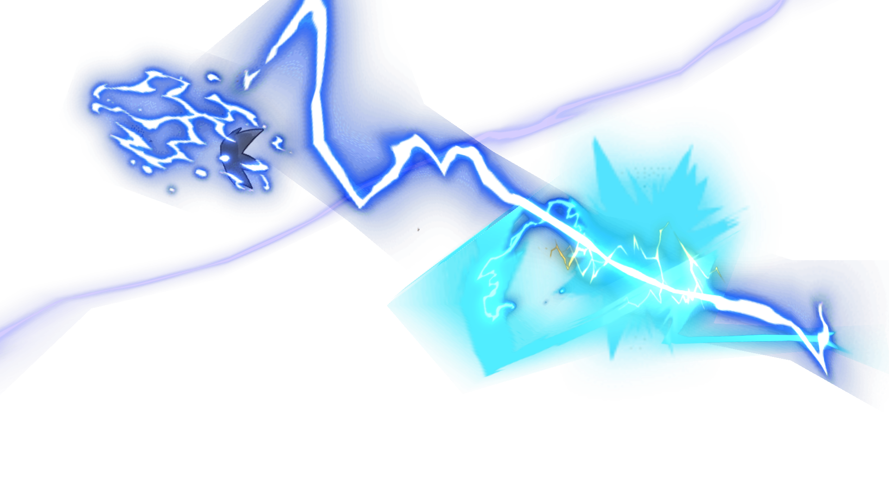
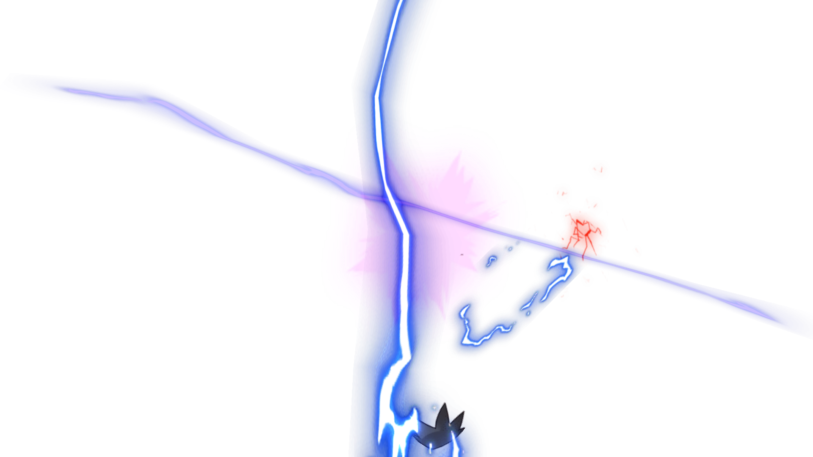
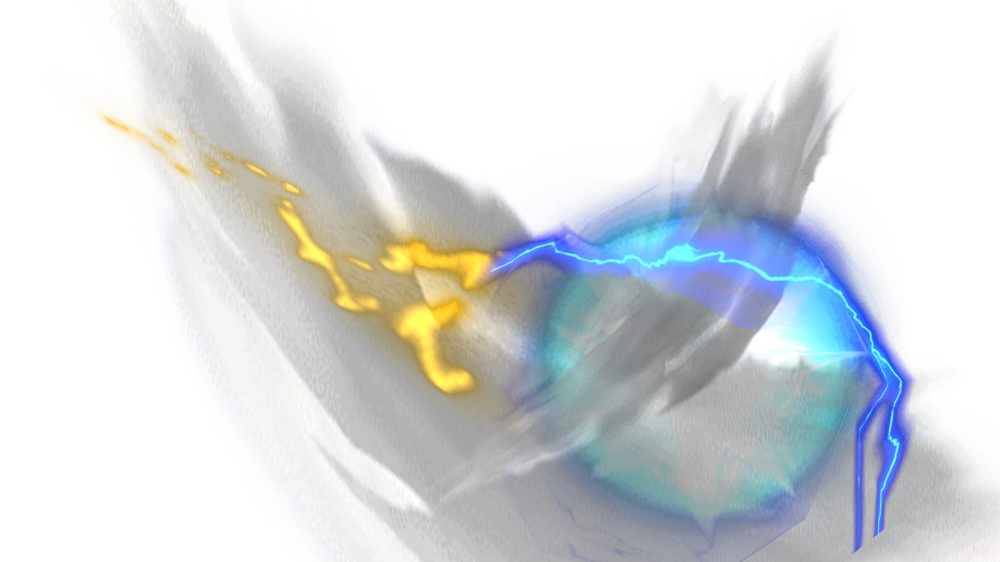

B02 / 091 · 连续动作抽帧
1 / 1657 / 16513 / 16519 / 16525 / 16531 / 16537 / 16543 / 16549 / 16555 / 16561 / 16567 / 16573 / 16579 / 16585 / 16591 / 16597 / 165
103 / 165
109 / 165115 / 165121 / 165127 / 165133 / 165139 / 165
145 / 165151 / 165157 / 165163 / 165